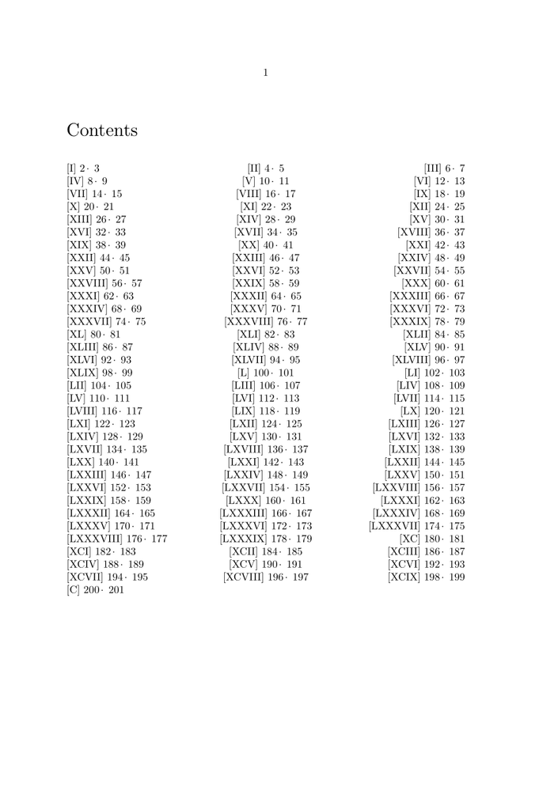

This a sample on how to generate an alternative list setup to resemble three columns.
Since this comes from a document which contained parallel text in facing pages, numbers are the even and the odd page numbers (original text and its translation).
-
\setupinteraction [state=start, style=, color=, focus=standard] \enabledirectives[references.border=red] \definelistalternative [pmcols] [renderingsetup=list:pmcol] \startsetups [list:pmcol:common] \relax % prevent lookahead \startcurrentlistentrywrapper [\currentlistentrynumber] \nbsp \currentlistentrypagenumber \narrownobreakspace · \narrownobreakspace \the\numexpr 1 + \currentlistentrypagenumber\relax \stopcurrentlistentrywrapper \stopsetups \startsetups [list:pmcol] \ifnum{\structurelistrawnumber{\currentlist} ; 3} = 1\relax \dontleavehmode \rlap {\directsetup{list:pmcol:common}} \orelse\ifnum{\structurelistrawnumber{\currentlist} ; 3} = 2\relax \hfill\directsetup{list:pmcol:common} \else \hfill\llap{\directsetup{list:pmcol:common}}\crlf \fi \stopsetups \definestructureconversionset[rom][n,R] \setuphead[title] [page=yes] \setuphead[chapter] [page=even, sectionconversionset=rom] \setuplist[chapter] [alternative=pmcols] \starttext \completecontent \dorecurse{100} {\startchapter \samplefile{zapf} \stopchapter} \stoptext
- 